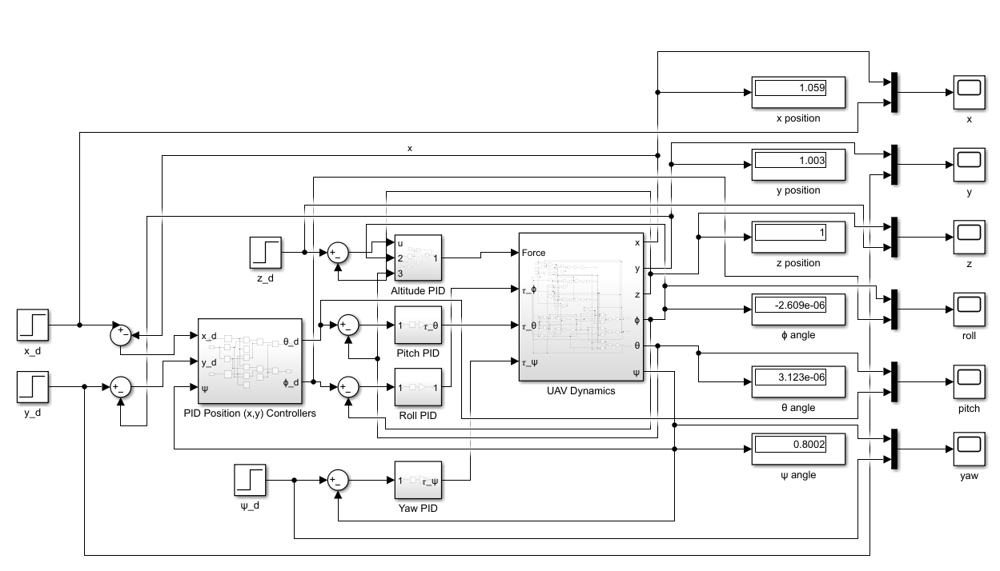

Analog vs. Digital Cascading PID Control for a 6-DOF Quadcopter

Overview
Digital PID controllers are widely used in quadcopter flight control. This project investigated whether the same cascading control architecture could be implemented with analog circuitry and how its performance compared with a digital implementation. I developed a digital baseline in Simulink using a published 6-DOF quadcopter model, with outer position loops feeding inner roll and pitch loops, alongside separate altitude and yaw loops. I then used the same controller gains to compare the analog and digital approaches under the same simulated disturbances.
Approach
I translated the digital PID controllers into op-amp circuit designs by calculating resistor and capacitor values to reproduce the selected controller gains. Converting the x- and y-position commands into roll and pitch references required an analog multiplier stage. I also designed an approximation of the required sine and cosine functions using a two-term Maclaurin series implemented with multiplication, gain, and summing stages. I referenced real components, an AD633 multiplier and TL072 op-amps, chosen for slew rate and low offset voltage, to keep the design grounded in realizable hardware.

Results
In simulation, I tested both controllers against step disturbances representing wind gusts and sinusoidal disturbances representing rotor vibration, increasing disturbance magnitude to compare their stability limits. The analog controller responded more slowly, overshot more, and reached its ±20 V supply rails at a step torque of 0.00105 N·m, while the digital controller remained stable at that disturbance level. The results suggest that an analog implementation can stabilize the modeled system under nominal conditions, but its lower disturbance tolerance makes it less suitable than digital control for this application. These findings are based on the simulated model rather than physical flight testing.